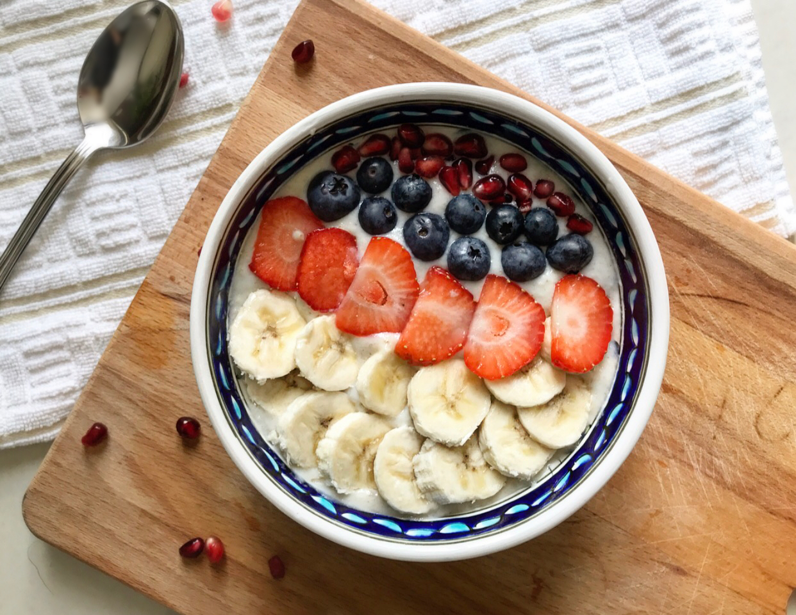

Bulk Oats

Description
This recipe is intentionally made calorie-dense, as it is for the purpose of bulking. It is highly recommended for hard gainers.
Ingredients
- 1 cup rolled oats
- 1 cup milk
- 1 banana
- 2 servings of your favourite protien powder
- 3 dates
- Toppings of choice
Instructions
- Combine oats with milk in a pot over medium/low heat.
- Bring to simmer and stir frequently until oats soften and liquid thickens.
- Remove pot from heat, add protein powder and stir till you get consisitent mixture.
- Add dates, and chopped banana.
- Add your favourite toppings and serve in a bowl.